『ザ・ローリング・ウエスタン』の世界は、そのタイトルにもあるとおり、昔のハリウッド映画の西部劇（ウエスタン）に出てくるような、アメリカ西部開拓時代の荒野がモデルになっています。
そして、このゲームの主人公「ジロー」は、なんとアルマジロなのです。
ちなみに、アルマジロは西部劇にもよく出てくるアメリカ・テキサス州を代表する動物です。

独特の世界観やゲームシステムが特徴的という『ザ・ローリング・ウエスタン』は、いったいどんなゲームなのか。N.O.Mライターが実際にプレイしてみたレポートをお届けします。
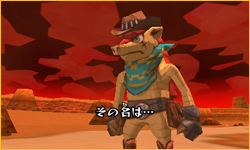
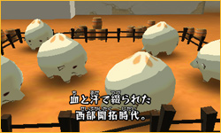
ゲームでは、西部の村を謎の岩石生命体たちが襲撃してきます。ジローは村の用心棒として、勇気と知恵をふりしぼって戦い、村人の生活に欠かせない生き物「マンジュー」を守りぬくことが目的になります。
説明すればするほどシュールな世界観です。
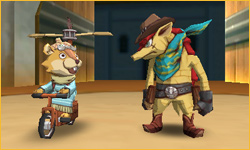
このゲーム中、ジローはまったくしゃべりません。その代わり、ジローの相棒となる「リッス」が、プレイヤーにいろいろなことを教えてくれたり、手助けしてくれたりします。ちなみに、リッスというのはリスのキャラクターです。
そしてリスはげっ歯目（齧歯目＝ネズミの仲間）なのですが、「ネズミ」と呼ばれると怒ります。
気にしなくてもよさそうに感じますが、そこはリスのプライドが許さないのでしょうか。
そしてリスはげっ歯目（齧歯目＝ネズミの仲間）なのですが、「ネズミ」と呼ばれると怒ります。
気にしなくてもよさそうに感じますが、そこはリスのプライドが許さないのでしょうか。
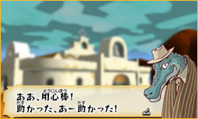
さて、ジローやリッスのほかにも、さまざまな村人たちが登場します。村人たちは、それぞれいろいろな動物たちに似たルックスで、個性豊かな濃いキャラばかり。
さきほどのリッスのように、セリフも細部まで作りこまれていて、プレイしていると奇妙な愛着がわいてきます。
さきほどのリッスのように、セリフも細部まで作りこまれていて、プレイしていると奇妙な愛着がわいてきます。
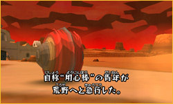
ジローは西部劇の保安官やガンマンたちのように、テンガロンハットをかぶって、スカーフを巻いていますが、彼の武器は拳銃ではありません。アルマジロの特徴を活かして丸まって体当たりしたり、鋭い爪で強力な一撃をくり出します。無口でワイルドな肉体派なのです。
ジローのアクションの基本となるのは、体を丸めて転がる動きです。タッチペンで下画面をタッチし、引っ張ってから離すと、まるでゴムを引っ張ってパチンコ玉を撃ち出したときのように、丸まったジローが突進します。
ジローのアクションの基本となるのは、体を丸めて転がる動きです。タッチペンで下画面をタッチし、引っ張ってから離すと、まるでゴムを引っ張ってパチンコ玉を撃ち出したときのように、丸まったジローが突進します。
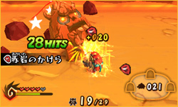
このジローの突進は、タッチペンを引っ張った方向と反対の方向にくり出されます。戦闘では、ヒョコヒョコと動く岩石生命体をねらって、ジローをガンガン体当たりさせます。うまく敵をやっつけたときの爽快感はバツグンです。
さらに、体当たりしたあとに爪で連続攻撃をしたり、ゲームを進めると可能になる回転しながら背中のトゲでガリガリと削るような攻撃など、さまざまなアクションがあります。最初のうちは思うように攻撃が当たらないかもしれませんが、「サルーン」でお試し練習ができるので、何度かやってみればすぐにコツがつかめるはずです。
さらに、体当たりしたあとに爪で連続攻撃をしたり、ゲームを進めると可能になる回転しながら背中のトゲでガリガリと削るような攻撃など、さまざまなアクションがあります。最初のうちは思うように攻撃が当たらないかもしれませんが、「サルーン」でお試し練習ができるので、何度かやってみればすぐにコツがつかめるはずです。
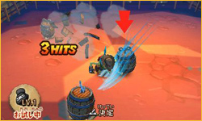
また、転がって広い荒野を高速で移動したり、採掘坑で貴重な鉱石を掘り出すときなどにも、このローリングアクションは重要です。
フィールド内ではスライドパッドで方向転換、Lボタンで急停止なので、ニンテンドー3DSを左手で持ち、右手でタッチペンを持つのが基本のプレイスタイルになります。
フィールド内ではスライドパッドで方向転換、Lボタンで急停止なので、ニンテンドー3DSを左手で持ち、右手でタッチペンを持つのが基本のプレイスタイルになります。
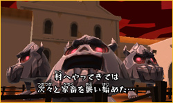
岩石生命体は、ひとつの村に対し、3日間にわけて攻めこんできます。つまり、ひとつのマップにつき3回の戦闘に勝てば、ステージクリアです。敵の攻撃は日を増すごとに激しくなりますが、2日目以降は、出現場所を把握し、動きのパターンを予測して、戦略を立てることが可能になります。
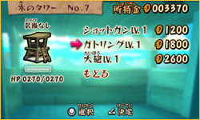
フィールド上には、ウォッチタワー（見張り台）やガンタワー（砲台付きの見張り台）を立てることができます。それぞれ索敵範囲を広げてくれたり、武器をセットしておけばジローがいなくても敵をやっつけてくれたりします。
したがって、敵がたくさん出現する場所の近くのタワーをいかに強化し、敵の攻撃から守るのかがカギとなります。
したがって、敵がたくさん出現する場所の近くのタワーをいかに強化し、敵の攻撃から守るのかがカギとなります。
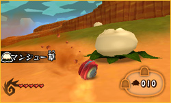
また、村に防護ゲートを建設すれば、敵の侵入を水際で食い止めることもできます。
フィールドには、防護ゲートの材料になる鉱石や、マンジューを育てるために必要な「マンジュー草」などが散らばっています。岩石生命体が出現するまでの間に、なるべく早くこれらを集めて、村に戻って準備することも重要なのです。
フィールドには、防護ゲートの材料になる鉱石や、マンジューを育てるために必要な「マンジュー草」などが散らばっています。岩石生命体が出現するまでの間に、なるべく早くこれらを集めて、村に戻って準備することも重要なのです。
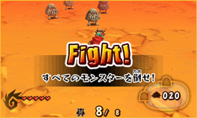
このゲームでの戦闘は、基本的にリアルタイムで進行します。その間、マップの探検、アイテム収集、戦闘の準備、そして実際の戦闘と、やることはたくさんあります。ジローが敵と戦っている間にも、ほかの敵が村に向かって進行していくので、あせらず素早く行動しなければいけません。
とは言うものの、実際にプレイしてみると、はじめての村ではドキドキしてしまいます。村に戻ったときや、タワーの中での建設操作のときなど、ゲーム内の時間が進行しないときに、落ち着いてじっくり考える時間を取ってみるのもよいかもしれません。1ステージを一気にクリアせず、1日ずつ休憩をはさんでもいいでしょう。
とは言うものの、実際にプレイしてみると、はじめての村ではドキドキしてしまいます。村に戻ったときや、タワーの中での建設操作のときなど、ゲーム内の時間が進行しないときに、落ち着いてじっくり考える時間を取ってみるのもよいかもしれません。1ステージを一気にクリアせず、1日ずつ休憩をはさんでもいいでしょう。
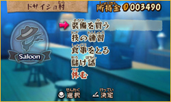
マンジューが全部なくなってゲームオーバーになってしまっても、同じマップを何回もプレイしてみると、必ず勝てる戦略が見つかります。
自分で考えた戦略がうまくハマったときの爽快感は、アクションがうまくいったときとはまたひと味違うものです。
自分で考えた戦略がうまくハマったときの爽快感は、アクションがうまくいったときとはまたひと味違うものです。
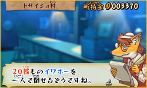
『ザ・ローリング・ウエスタン』のフィールド上には、さまざまなお宝が隠された古代遺跡が点在しています。また、1日目の戦闘が終わってサルーンを訪れると、村人から賞金をもらえる依頼（クエスト）を受けることもできます。
ゲームに慣れてきたら、こうしたお宝探しやクエストのコンプリートを目指すといいでしょう。
ゲームに慣れてきたら、こうしたお宝探しやクエストのコンプリートを目指すといいでしょう。
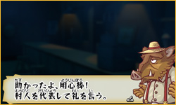
さらに、襲撃をクリアしたタイムによって、それぞれのステージマップで星がもらえます。これらの星を集めることで、新しい村のマップが解放され、プレイできるようになります。つまり、たんに村を守りきるだけでなく、より早く敵を倒してクリアすることも目標になります。
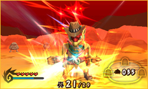
後半のステージでは非常に高度な戦略が必要になるので、ゲームのうまい人でもかなりの手ごたえがあるはずです。
そしてすべてのステージをクリアしてしまっても、ベストタイム更新を目標にして、どこまでもやりこむことが可能です。
そしてすべてのステージをクリアしてしまっても、ベストタイム更新を目標にして、どこまでもやりこむことが可能です。
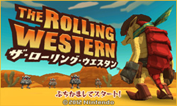
このように、パッケージソフトに近いほどのボリュームで、プレイすればするほど新しい発見がある、そんな奥の深さも『ザ・ローリング・ウエスタン』の魅力です。ぜひみなさんもプレイして、この独特の世界観・アクション・戦略性という3つの楽しさを存分に味わってみてください。